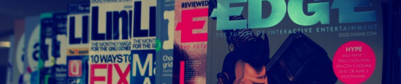

The library at NITH work to promote access to academic literature, and to provide guidance in information retrieval for students and staff. The library also offers inspiration, relaxation and entertainment through a collection of journals, magazines, board games, graphic novels, and a separate gaming room (the Battlestation).

The library is located in the same building as the student administration and keeps the same hours
(weekdays 9 AM - 3 PM, with a lunch break from 11:30 AM - 12 PM).
Staff and students can borrow books from NITH's library, and if you need books that we do not have, then we can order these through inter-library loan from other libraries. Everyone with a valid NITH student card can register as users of the NITH library, and your student card is also your library card. You can order copies of articles, do searches in various databases, and get help with how to write bibliographies and reference lists for your papers.
We have about 5000 books in our collection and use the BIBSYS library system to register them. Our magazine collection includes NET, Computer Arts, Gamedeveloper, EDGE, Harvard Business Review, MSI Quarterly and others. You can search our books using BIBSYS Ask, or journal articles using the ACM database (Association for Computing Machinery).
We do our best to fulfill special requests from staff and students for specific materials that they wish for us to purchase.
Do you need more information or inspiration? Drop by!